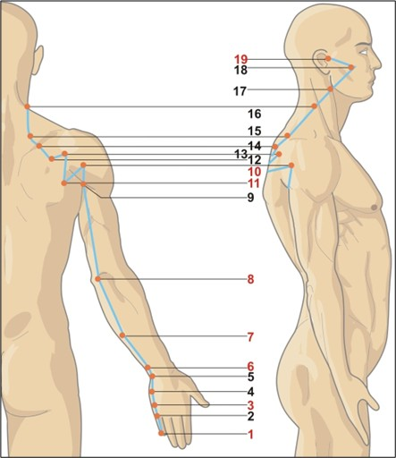

Fereastra asimilării și discernământului
Intestinul Subțire atinge potențialul maxim de separare, absorbție și asimilare după-amiaza devreme, între orele 13:00 și 15:00. Somnolența sau oboseala acută după prânz, balonarea sau diareea postprandială sunt KPI clinici direcți ai dezechilibrului Focului ministerial.
Energie, ore & elemente asociate
☯Tip energetic
- Yang Mare — Shou Taiyang (手太阳): Nivelul energetic cel mai exterior al corpului, responsabil cu protecția față de agenții patogeni externi și cu separarea clară a ceea ce este benefic față de ceea ce trebuie eliminat.
- Meridian pereche: Inima (Shou Shaoyin 手少阴). Cuplul Foc: Inima este Împăratul care adăpostește Shen-ul; Intestinul Subțire este ministrul care separă purul de impur — atât fizic (nutrienți vs. deșeuri), cât și mental (claritate vs. confuzie).
- Calitate funcțională: Discernământul (分辨 Fēnbiàn) — capacitatea de a analiza, tria și decide ce este esențial și ce trebuie eliberat, în alimentație, informații și emoții.
- Lichid asociat: Secrețiile intestinale — enzimele digestive și mucusul protector al mucoasei intestinale.
🔥Element Foc (火) — Focul ministerial
- Direcție: Sud | Anotimp: Vara
- Climat: Căldura | Culoare: Roșu-portocaliu
- Gust: Amar | Sunet: Râsul
- Emoție: Bucuria (Xi 喜) în echilibru; agitația/panica în dezechilibru
- Țesuturi: Vasele de sânge (prin legătura cu Inima)
- Organ de simț: Urechea — terminusul meridianului SI-19 (Tinggong) explică direct tinitusul și hipoacuzia din dezechilibrele Focului ministerial.
🕐Ceasul organic — 24 h
- Înainte — Inima (HT): 11:00–13:00. Inima transmite Qi-ul vitalizat și Shen-ul clarificat Intestinului Subțire pentru procesare și asimilare.
- Intestinul Subțire (SI): 13:00–15:00. Asimilare maximă, separarea nutrienților de reziduuri. Prânzul optim este cel consumat înainte de ora 13:00 — fereastra de digestie maximă.
- După — Vezica Urinară (BL): 15:00–17:00. Preia reziduurile lichide filtrate de IS și le trimite spre eliminare.
- Semnificație clinică: Oboseală marcată la 13–15 = deficit de Foc ministerial. Diaree explozivă după-amiaza = Căldură-Umezeală în IS. Tinitus mai intens la 13–15 = exces Yangming.
GB
LV
LU
LI
胃
脾
HT
小肠
BL
KD
心包
TW
Traseu & anatomie energetică

Start la 0,1 cun proximal de unghiul ulnar al unghiei degetului mic. Punct Jing-Izvor al meridianului. Urcă pe marginea ulnară a degetului.
SI-3 pe marginea ulnară la strângerea pumnului — punct cheie Du Mai. SI-4 la joncțiunea metacarpofalangiană 5-hamat. Mâna concentrează punctele de tip Ying/Shu/Yuan.
„Osul amuzant" — depresiunea dintre olecranul ulnar și epicondilul medial al humerusului. Punct He-Mare al meridianului. Sedare exces, tratament epilepsie.
Meridianul urcă pe spatele umărului, prin articulația gleno-humerală posterioară și sub spina scapulei. Zona majoră pentru frozen shoulder și cervicalgii.
Traseul caracteristic în zigzag pe toată suprafața scapulei: fosa infraspinos, fosa supraspinoasă, unghiurile marginii vertebrale. Se conectează cu GV-14 Dazhui — marea axă Yang.
Urcă lateral pe gât prin SCM, traversează obrazul sub zigom, se termină în depresiunea din fața tragusului la SI-19 — Palatul Auzului. Explică relația IS cu tinitusul și surditatea.
🔗Conexiuni interne profunde
- Ramura internă — torace → inimă → intestin subțire: Din fosa supraclaviculară (ST-12), ramura profundă coboară și înfășoară inima în spirală — confirmând cuplul funcțional IS–Inimă. Coboară prin diafragmă, stomac, ajunge la intestinul subțire propriu-zis.
- Ramura facială bifurcată: Pe față, meridianul se divide: o ramură merge la colțul intern al ochiului (BL-1), alta la colțul extern (GB-1). Această rețea explică influența IS asupra vederii, vederii periferice și conexiunii cu vederea nocturnă.
- Conexiunea cu GV-14 Dazhui: Înainte de a urca pe gât, meridianul se conectează cu marea axă Yang a corpului. Explică efectul SI-3 (Houxi) în reglarea Vasului Guvernator și tratamentul lombalgiei și cervicalgiei acute.
- Influența pituitară: Ramurile faciale superioare influențează energetic zona hipofizară, afectând indirect întregul sistem endocrin și ciclul menstrual prin conexiunea HT–SI.
Rol: „Ministerul Recepției" — funcții fiziologice
⚖️Separarea purului de impur (清浊分利)
Funcția fundamentală: primește conținutul parțial digerat al Stomacului și îl separă. Nutrienții puri (purul) → trimiși Splinei pentru distribuție. Reziduurile (impurul) → Intestin Gros și Vezica Urinară. Disfuncția produce confuzie corporală și mentală.
🧬Absorbția nutrienților & apei
Principalul sit de absorbție: vitamine, minerale, aminoacizi, acizi grași esențiali, vitamina B12. Dezechilibrul energetic → malabsorbție, anemie, deficit de B12, deficiențe multiple chiar cu aport alimentar corect.
🛡️Protecție imunitară (GALT)
Cel mai bogat țesut limfoid din corp (plăci Peyer, lamina propria). Intestinul Subțire este un pilon imun major. Dezechilibrul Focului ministerial → susceptibilitate infecțioasă, autoimunitate, hipersensibilitate alimentară.
🧠Claritatea mentală & Shen-ul
„Fratele Controlorului Suprem" — susține claritatea mentală prin digestia informațiilor. O absorbție deficitară generează „ceață mentală" (brain fog), confuzie decizională și incapacitate de sinteză. Conexiunea directă HT–IS.
👂Auzul & urechea
Meridianul se termină la ureche (SI-19 Tinggong). Tinitusul, hipoacuzia și otitele recurente sunt adesea legate energetic de dezechilibrul Intestinului Subțire — mai ales cele cu tonalitate înaltă-șuierătoare (exces Foc).
🌡️Transferul de căldură HT → IS
Căldura excesivă din Inimă (emoții intens suprimate) se transmite Intestinului Subțire, producând: ulcerații bucale, disurie, urină tulbure-roșiatică, senzație de arsură în gâtul esofagian, insomnie agitată.
Blocaje & indicații terapeutice
⚠️Tipare patologice principale
- Deficiență de Qi și Yang: Malabsorbție, diaree cronică nedigerată (alimente vizibile în scaun), balonare, scaune moi palide, oboseală extremă după masă, anemie, senzație de frig abdominal, dureri lombare cronice.
- Căldură-Umezeală în Intestinul Subțire: Urină tulbure sau cu sediment roșiatic, disurie (arsură la urinare), dureri hipogastrice, balonare, diaree iritativă postprandială, tinitus cu senzație de căldură.
- Stagnare de Qi și sânge: Dureri abdominale fixe și colicative, sensibilitate la palpare, hernii inghinale, dureri de-a lungul meridianului (braț ulnar, umăr posterior).
- Pe traiectul meridianului: Frozen shoulder (periartrită scapulohumerală), contracturi cervicale, epicondilită medială, dureri pe marginea ulnară a brațului, tinitus, surditate, dureri ATM, cefalee occipitală.
- Căldură transmisă de la Inimă la IS: Ulcerații bucale recurente, insomnie cu agitație, sete intensă, urină roșie-concentrată, senzație de arsură în gât.
🏥Indicații terapeutice generale
- Digestiv: Malabsorbție, sindrom de intestin iritabil, diaree cronică, boală Crohn, colite, intoleranțe alimentare multiple.
- Auditive: Tinitus (mai ales tonalitate înaltă), hipoacuzie, otite, vertij de cauză otogenă.
- Musculo-scheletic: Frozen shoulder, cervicalgii, lombalgii acute (prin Du Mai), dureri pe traiectul ulnar al brațului, epicondilită.
- Urinar: Disurie, cistite recurente, urinări frecvente din Căldură-Umezeală, urină tulbure.
- Facial & neurologic: Paralizie facială periferică, nevralgie de trigemen, dureri ATM (articulație temporomandibulară).
- Lactație: Mastite, lactație insuficientă (SI-1 Shaoze — punct specific).
- Suport cognitiv: Claritate mentală, reducerea brain fog-ului, îmbunătățirea discernământului și a capacității decizionale.
Discernământul — calitatea psihică a Focului ministerial
Intestinul Subțire „digeră" nu doar alimentele, ci și informațiile, emoțiile și experiențele de viață. Capacitatea de a distinge esențialul de accesoriu, de a lua decizii corecte bazate pe o analiză limpede, este atribuită acestui meridian. Un IS echilibrat = claritate mentală, judecată sănătoasă, capacitate de sinteză. IS dezechilibrat → confuzie, ruminație, incapacitate decizională sau, în exces, obsesia pentru detalii și hiperanaliza paralizantă.
Atribute psiho-emoționale ale Focului ministerial
✅Atribute pozitive — Foc ministerial în armonie
- Claritate mentală și discernământ ascuțit
- Capacitate de sinteză și de a distinge esențialul
- Judecată sănătoasă, decizii rapide și corecte
- Înțelepciune practică, gândire structurată
- Deschidere autentică față de nou și schimbare
- Echilibru emoțional, umor natural, bucurie funcțională
⚠️Atribute negative — Foc ministerial dezechilibrat
- Confuzie mentală, „ceață cerebrală" cronică (brain fog)
- Incapacitate de a lua decizii — orice decizie pare grea
- Ruminație obsesivă, analiză infinită a acelorași gânduri
- Tendința de a „diseca" excesiv informațiile fără concluzii
- Îndoială cronică de sine, autoînvinovățire persistentă
- Agitație mentală: gânduri accelerate, incapacitate de oprire
Manifestări psihice în funcție de tipul energetic
↓Deficit de energie (Qi/Yang deficitar — Foc stins)
Oboseală cronică, lipsă de vitalitate, depresie și apatie, lipsă de interes pentru lumea exterioară. Sentiment de „gol interior" — incapacitate de a asimila experiențele pozitive (similar malabsorbției fizice). Frustrare și autoînvinovățire constantă — „de ce nu pot înțelege ce vreau?". Tinitus cu tonalitate joasă, persistentă. Persoana nu poate „digera" informațiile sau deciziile importante. Izolare socială progresivă.
↑Exces de energie (Căldură/Stagnare — Foc agitat)
Agitație interioară, predispoziție la suprasolicitare cronică — persoana „face ore suplimentare" în minte și în viață. Nu se poate opri, mănâncă pe fugă, este incapabilă de relaxare. Claritate mentală excesivă transformată în obsesie pentru detalii și critică. Tinitus cu tonalitate înaltă, șuierătoare, care accentuează neliniștea. Tendința de a critica și corecta pe toți. Iritabilitate dacă ritmul e întrerupt.
Discernământul ca oglindă a relației cu părinții
👪Relația cu principiul matern & patern (Yin/Yang al Focului ministerial)
- Armonie: Relații echilibrate, capacitate de a primi și oferi iubire autentică. Independență emoțională matură. Discernământ sănătos aplicat și în relații — știe când să se apropie și când să se distanțeze.
- Dezechilibru ușor: Mici nemulțumiri legate de așteptările familiei, fără conflict deschis. Dificultate în a accepta ajutorul din exterior, ușoară nevoie de aprobare maternă. Tendință la autoînvinovățire când lucrurile nu merg bine.
- Dezechilibru moderat: Dificultate în a accepta grija și iubirea maternă (sentiment de a nu fi suficient de bun). Sau, în exces: ușoară tensiune cu autoritatea paternă, senzația de a fi constrâns de reguli, rezistență la structuri.
- Dezechilibru sever: Traumă profundă legată de incapacitatea de a primi iubire și grijă. Sentiment de respingere sau abandon care perturbă capacitatea de asimilare la toate nivelurile — fizic, emoțional, mental. Nevoie disperată de validare combinată cu incapacitatea de a o accepta.
🔗Legătura cu emoțiile acute și reflexul intestinal
Teama sau panica extremă pot declanșa o reacție reflexă imediată la nivelul intestinelor (diaree bruscă, crampe intestinale) — reflectând conexiunea profundă neuro-vegetativă dintre emoțiile acute și funcția intestinului subțire. Aceasta confirmă că IS nu doar „prelucrează" informațiile cognitive, ci integrează și răspunsurile emoționale primare (instinctele).
Instrument de evaluare a meridianului Intestinului Subțire
Glisați pe bara colorată sau utilizați meniul dropdown pentru a selecta starea energetică a clientului. Profilul complet — fiziologic, nutrițional, emoțional și terapeutic — se afișează imediat. Apreciați capacitatea de discernământ și asimilare a clientului înainte de consultație.
Evaluare energetică — Meridian Intestin Subțire (SI)
Selectați nivelul observat: glisați pe bară, trageți indicatorul sau utilizați meniul.
Meridianul Intestinului Subțire (Shou Taiyang) — 19 puncte SI
Tabel complet cu localizare de precizie, categorie energetică, funcții principale și indicații terapeutice detaliate. Punctele cu ⭐ sunt de uz frecvent în practica clinică. Include traduceri corecte din chineză și adăugiri clinice moderne.
| Punct | Localizare | Categorie | Funcții principale | Indicații detaliate |
|---|---|---|---|---|
| SI-1Shaoze 少泽 · Mlaștina Mică |
Față ulnară a degetului mic, la 0,1 cun proximal de unghiul ulnar al unghiei, la joncțiunea pielii dorsale cu cea palmară. | Jing-Izvor (井) 💧 Punct de urgență |
|
Lactație: Mastită acută, lactație insuficientă — punct specific de primă intenție. Urgențe: Pierderea cunoștinței, stări febrile acute, gât umflat. Cefalee: Cefalee acută prin exces Yang. |
| SI-2Qiangu 前谷 · Valea Anterioară |
Față ulnară a mâinii, distal de articulația metacarpofalangiană a degetului mic (MCP-5), la marginea membranei interdigitale. | Ying-Izvor (荥) 🌊 Răcorire sânge |
|
ORL: Dureri de gât inflamate, ochi congestionați prin căldură. Auditive: Tinitus, surditate bruscă prin căldură. Lactație: Mastită, lactație insuficientă. |
| SI-3Houxi 后溪 · Torentul Posterior ⭐ |
Față ulnară a mâinii, proximal de capul metacarpianului 5, unde se formează o cută la strângerea pumnului. Se palpează în adâncitura formată la flexia degetelor. | Shu-Abrupt (输) 🏔️ Cheie Du Mai (督脉) ⭐ |
|
Coloana vertebrală: Rigiditate cervicală acută, lombalgie acută (punct de primă intenție prin Du Mai). Cefalee: Cefalee occipitală, vertij. Psihiatric: Epilepsie, agitație, insomnie prin exces Yang. Infecțios: Malarie, febră cu frisoane. Obs: Combinat cu BL-62 = protocol major pentru coloana vertebrală. |
| SI-4Wangu 腕骨 · Osul Încheieturii |
Fața ulnară a mâinii, în depresiunea dintre baza metacarpianului 5 și osul hamat, la marginea pielii dorsale-palmare. | Yuan-Sursă (原) ⭐ |
|
Hepatobiliar: Icter, inflamații biliare (prin conexiunea IS cu digestia). Locomotor: Dureri și inflamații ale încheieturii mâinii, tendinite. ORL: Tinitus, surditate, rigiditate cervicală. |
| SI-5Yanggu 阳谷 · Valea Yang |
Față ulnară a încheieturii, în depresiunea dintre capul ulnei și osul piramidal (triquetrum), la pliul dorsal al încheieturii. | Jing-Râu (经) 🏞️ |
|
Auditive: Tinitus, surditate, vertij de cauză otogenă. Cefalee: Cefalee prin exces de Foc IS. Locomotor: Dureri de încheietură, febră asociată afecțiunilor IS. |
| SI-6Yanglao 养老 · Hrănirea Longevității |
1 cun deasupra pliului dorsal al încheieturii, în depresiunea de pe marginea radială a capului ulnei. Se localizează cu palma față în jos, apoi rotind intern mâna. | Xi-Fisură (郄) ⚡ |
|
Durere acută: Dureri acute de umăr și braț pe traiectul SI. Oftalm: Vedere încețoșată, dureri oculare, degenerescență maculară (suport). Locomotor: Lombalgie acută, rigiditate cervicală bruscă. |
| SI-7Zhizheng 支正 · Ramura Dreaptă |
5 cun deasupra pliului dorsal al încheieturii, pe linia care unește Yanggu (SI-5) și Xiaohai (SI-8), pe fața posterioară a antebrațului. | Luo-Conector (络) Legătură SI ↔ HT |
|
ORL: Cefalee occipitală, tinitus, surditate. Locomotor: Dureri de cot și braț pe meridian. Dermatologic: Veruci, negi, formațiuni cutanate benigne (punct clasic MTC). Psihic: Neliniște, agitație transmisă de la IS la Inimă. |
| SI-8Xiaohai 小海 · Oceanul Mic |
În depresiunea formată între olecranul ulnar și epicondilul medial al humerusului — „osul amuzant". Cu cotul flectat la 90°, în depresiunea ulnar-epicondilară. | He-Mare (合) 🌊 |
|
Locomotor: Dureri de cot (epicondilită medială), paralizie de braț, amorțeli. Neurologic: Epilepsie, agitație mentală prin Foc IS. Auditive: Surditate, dureri abdominale colicative. |
| SI-9Jianzhen 肩贞 · Fidelitatea Umărului ⭐ |
1 cun deasupra pliului axilar posterior, pe partea posterioară a umărului, la marginea inferioară a mușchiului deltoid posterior. | Punct local ⭐ |
|
Locomotor: Frozen shoulder (principal), dureri de braț, umflătură axilară, scrofulă. Obs: Punct major pentru periartrită scapulohumerală — obligatoriu în protocolul umăr. |
| SI-10Naoshu 臑俞 · Shu-ul Brațului |
Sub spina scapulei, la mijlocul liniei imaginare dintre Jianzhen (SI-9) și Quchi (LI-11), în fosa infraspinos. | Punct local Întâlnire SI–BL–GB |
|
Locomotor: Dureri de umăr și braț, periartrită scapulohumerală. Limfatic: Scrofulă, limfadenopatie axilară. |
| SI-11Tianzong 天宗 · Strămoșul Ceresc ⭐ |
În centrul fosei infraspinoase a scapulei, la joncțiunea treimii superioare cu treimile inferioare ale spinei scapulei. | Punct local ⭐ |
|
Locomotor: Dureri de umăr și spate, contracturi ale mușchilor scapulari, periartrită. Respirator: Astm bronșic, durere toracică, dispnee. Lactație: Mastită, lactație insuficientă (conexiune cu glanda mamară prin fascie). Obs: Punct excelent pentru tensiunile din „zona de povară a responsabilităților" (umeri). |
| SI-12Bingfeng 秉风 · Prinderea Vântului |
În centrul fosei supraspinoase a scapulei, direct deasupra spinei scapulei, la mijlocul marginii superioare a scapulei. | Punct local Întâlnire SI–LI–TW–GB |
|
Locomotor: Dureri de umăr și spate, slăbiciune și paralizie a brațelor. Neurologic: Pareze de plex brahial, sechele neurologice la nivel de braț. |
| SI-13Quyuan 曲垣 · Zidul Curbat |
La marginea superioară a spinei scapulei, la joncțiunea cu unghiul medial al scapulei, în depresiunea palpabilă. | Punct local |
|
Locomotor: Dureri de umăr și spate, contracturi musculare cervico-scapulare cronice. Obs: Excelent în sindroamele miofasciale ale mușchilor supraspinos și trapez. |
| SI-14Jianwaishu 肩外俞 · Shu-ul Extern al Umărului |
3 cun lateral de marginea inferioară a procesului spinos al vertebrei T1, la marginea medială a scapulei. | Punct local |
|
Locomotor: Dureri de umăr și spate, brațe moi, paralizie a membrului superior. Neurologic: Radiculopatie cervicală C5-C6. |
| SI-15Jianzhongshu 肩中俞 · Shu-ul Central al Umărului |
2 cun lateral de marginea inferioară a procesului spinos al vertebrei C7 (proeminent la flexia capului). | Punct local |
|
Locomotor: Dureri de umăr și spate, rigiditate cervicală înaltă, paralizie. Respirator: Tuse, astm, senzație de constricție toracică. |
| SI-16Tianchuang 天窗 · Fereastra Cerului |
Posterior de marginea posterioară a SCM, la nivelul unghiului mandibulei, la același nivel cu vârful lui Adam. | Fereastră Cerească ✦ |
|
Auditive: Tinitus, surditate, vertij. Gât: Dureri de gât, voce răgușită, afonie, rigiditate cervicală. Obs: Punct al „Ferestrelor Cerului" — influențează comunicarea și deschiderea spre superior. |
| SI-17Tianrong 天容 · Splendoarea Cerului |
Posterior de unghiul mandibulei, în depresiunea dintre unghiul mandibulei și marginea anterioară a SCM. Se localizează cu gura ușor întredeschisă. | Punct local |
|
ORL: Amigdalită acută și cronică, scrofulă (limfadenită), dureri de dinți. Auditive: Surditate, tinitus. Gât: Disfagie, umflatura gâtului, laringite. |
| SI-18Quanliao 颧髎 · Fisura Pomeților ⭐ |
Pe obraz, direct sub centrul marginii inferioare a osului zigomatic, vertical sub cantusul extern al ochiului, în depresiunea palpabilă. | Punct local ⭐ SI–TW |
|
Neurologic: Paralizie facială periferică, nevralgie de trigemen (V2, V3), spasm facial. ATM: Dureri ale articulației temporomandibulare, trismus, scârțâit mandibular. Dental: Dureri dentare superioare, sinuzită maxilară. |
| SI-19Tinggong 听宫 · Palatul Auzului ⭐ |
În fața tragusului urechii, în depresiunea formată când gura este ușor întredeschisă, la joncțiunea dintre tragus și condilul mandibulei. Obligatoriu localizat cu gura deschisă. | Punct terminus ⭐ SI–TW–GB |
|
Auditive: Tinitus (orice tip), surditate, hipoacuzie, otite externe și medii, vertij de origine otogenă. Neurologic: Epilepsie, psihoză agitată, convulsii. ATM: Dureri de dinți, luxație mandibulară. Obs: Punctul terminus al meridianului SI. Cu TW-17 și GB-2 = protocol standard pentru surditate și tinitus în MTC. |
Protocoale de autoterapie — Foc ministerial
Tehnicile de mai jos pot fi practicate zilnic fără echipament special. Sunt complementare oricărei intervenții clinice și pot fi recomandate clienților ca protocol de acasă. Fereastra optimă pentru practici IS: după prânz, înainte de ora 15:00.
Tehnici de acupresură & autoterapie
Automasaj pe traiect
Masați de la degetul mic pe marginea ulnară a mâinii, antebrațului, prin spatele cotului și brațului, peste umăr și omoplat, lateral pe gât și față până la ureche. 5–10 minute / braț. Eliberează tensiunea cervico-scapulară, stimulează digestia și îmbunătățește auzul.
SI-3 Houxi — Du Mai & coloana ⭐
Strângeți pumnul și stimulați cuta formată pe marginea ulnară a mâinii (proximal de degetul mic). Masaj circular ferm cu policele opus. 1–2 minute / mână, de 2–3 ori pe zi. Excelent pentru dureri de ceafă acute, lombalgie și reglarea Du Mai (coloanei energetice).
SI-19 Tinggong — Palatul Auzului ⭐
Deschideți ușor gura și apăsați cu degetul mijlociu în depresiunea din fața tragusului. Masaj ușor circular. 30–60 secunde, de 3–4 ori pe zi. Eficient pentru tinitus, surditate și disconfort auricular. Combinați cu masajul pavilionului urechii și TW-17.
SI-1 Shaoze — lactație & urgențe
Presiune fermă cu unghia sau pensarea degetului mic la 0,1 cun de unghia ulnară. 30 secunde, de 3–5 ori pe zi. Punct specific pentru mastită acută și lactație insuficientă. Ajută și în stările febrile acute prin dispersarea Focului.
SI-11 Tianzong — umărul & spatele ⭐
Masaj circular sau presiune fermă în centrul fosei infraspinoase a omoplatului (solicită ajutor pentru automasaj). 1–2 minute / omoplat. Excelent pentru tensiunile cronice de umăr, senzația de „povară pe umeri" și suportul lactației.
Nutriție pentru Foc ministerial
Gustul amar moderat (andive, radicchio, cicoare, cacao neagră) tonifică Focul. Alimente ușor digerabile, gătite (nu crude), cu proteine de calitate (pește, ouă). Mestecați lent — IS are nevoie de preprocesare mecanică optimă. Evitați: grăsimile saturate, alimentele reci, mesele pe grabă.
Suplimente & fitoterapie IS
Absorbție/Flora: Enzime digestive (bromelain, papain), probiotice (L. rhamnosus, L. acidophilus), glutamină (5g/zi), zinc-carnosină, B12 (metilcobalamină). Antiinflamator: Omega-3, curcumin lipozomal. Ceaiuri: Mușețel, fenicul, mentă după mese. Anemia asociată: Fier chelat + vitamina C, acid folic.
Tehnici de claritate mentală
Exercițiu de discernământ: Scrieți 3 opțiuni pentru o decizie dificilă. Lângă fiecare: „Acest lucru mă hrănește sau mă consumă?" — IS „votează" instinctiv. Brain dump: 10 minute de scriere liberă dimineața pentru a descărca ruminațiile. Meditație de claritate: Focalizare pe respirație, cu intenția de a „separa esențialul de neesențial".
Protocol clinic — combinații de acupunctură
🏥Combinații clinice recomandate
- Frozen shoulder (umăr înghețat): SI-9, SI-11, LI-15 (Jianyu), GB-21 (Jianjing) — cu moxibustie dacă există componentă de Frig-Umezeală.
- Tinitus & surditate: SI-19, TW-17 (Yifeng), GB-2 (Tinghui), SJ-21 (Ermen) — protocol standard MTC pentru afecțiunile auditive.
- Malabsorbție / deficit absorbție: SI-4, ST-25 (Tianshu), CV-12 (Zhongwan), ST-36 (Zusanli) — cu moxibustie în Frig-Umezeală.
- Lombalgie acută (prin Du Mai): SI-3 + BL-62 (Shenmai) — combinația clasică pentru activarea Vasului Guvernator.
- Căldură IS transmisă Inimii (ulcerații bucale, insomnie): SI-5 (Yanggu), HT-5 (Tongli — Luo), HT-8 (Shaofu) — drenează căldura din cuplul HT–SI.
- Paralizie facială / Nevralgie trigemen: SI-18, ST-6 (Jiache), LI-4 (Hegu), GB-14 (Yangbai) — protocol facial standard.
💬Recomandări psiho-comportamentale — Discernământ
- Practici de triaj mental: Tehnica „mănânc sau arunc?" — aplicată la informații, relații și decizii. IS are nevoie de claritate, nu de acumulare.
- Mestecat conștient: Mestecați fiecare îmbucătură de 20–30 de ori. Stimulează direct IS și antrenează discernământul (puneți atenție la ce simțiți gustând).
- Prânzul înainte de 13:00: Profitați de fereastra de digestie maximă. Evitați mesele copioase după 14:00.
- Terapie pentru confuzie decizională: TCC sau coaching axat pe discernământ și valori. Clarificarea priorităților reduce supraîncărcarea IS energetic.
- Mișcare după prânz: O plimbare de 15–20 minute imediat după masă stimulează peristaltismul IS și îmbunătățește absorbția.
Indicații de urgență
Malabsorbție severă cu scădere rapidă în greutate, anemie profundă refractară la tratament, dureri abdominale acute cu sânge în scaun, tinitus brusc asociat cu pierdere acută de auz (necesită exclus ocluzie vasculară) sau frozen shoulder cu paralizie completă — necesită evaluare medicală urgentă. Acupunctura și fitoterapia sunt strict complementare în aceste cazuri.